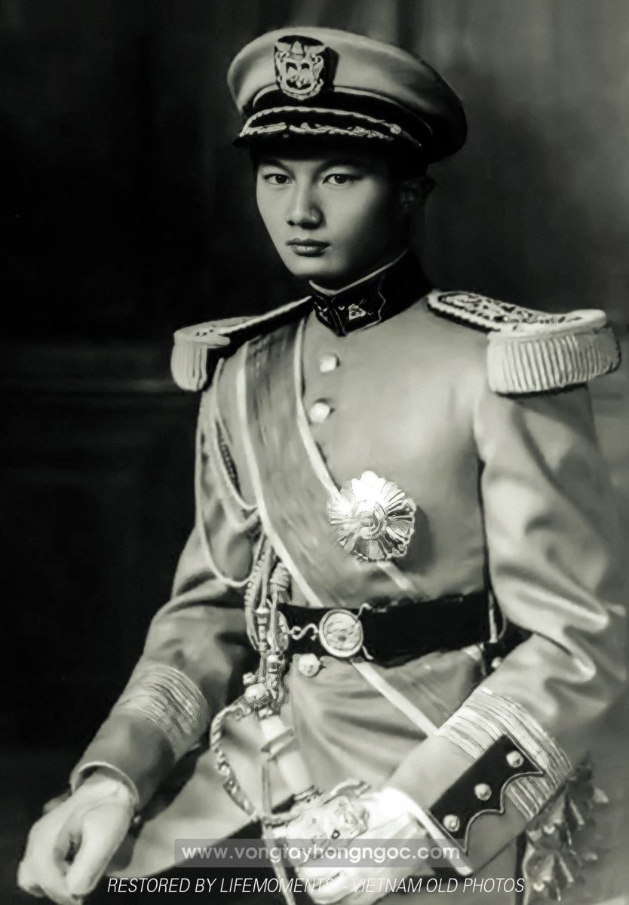
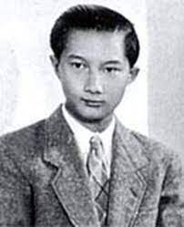

Ngày mồng 9 tháng 4 năm 1954, một bữa tiệc được tổ chức để tiễn quốc trưởng Bảo Đại trở lại Paris.
Về Pháp, ông lại trở về lâu đài Thorenc ở Cannes. Nơi đây lúc này đã trở thành dinh Chính phủ. Trong tòa nhà bằng đá cẩm thạch, ông làm việc cùng khoảng hai mươi người cộng sự. Đó là tổng lý văn phòng, thư ký, cố vấn, sĩ quan hầu cận, lái xe. Bà Nam Phương cũng có một văn phòng riêng và ông Nguyễn Tiến Lãng luôn là thư ký của bà.
Ông và bà vẫn ở trong cùng một mái nhà, làm việc trong cùng một dinh nhưng mỗi người đều có văn phòng riêng và phòng ngủ riêng. Họ chỉ bàn bạc những việc liên quan đến các con, đến một số công việc đại sự. Còn lại mỗi người có một cuộc sống tình cảm riêng. Ông vẫn có bà Mộng Điệp và những cô gái trẻ đẹp khác. Chính vì vậy mà người dân thành phố Cannes mỗi lần nói về ông là nhớ đến một ông hoàng ham thích hưởng lạc với những thú vui trần thế.
Trong khi đó, bà Nam Phương, ngoài công việc, lấy việc chăm sóc dạy dỗ các con làm niềm vui, bà vẫn cô đơn. Không phải không có ai xao xuyến vì bà, không những có mà còn có rất nhiều là đằng khác. Bởi vì bà vẫn rất duyên dáng, xấp xỉ bốn mươi tuổi nhưng bà vẫn đẹp, một vẻ đẹp không lộng lẫy như các cô gái trẻ mà là một vẻ đẹp mặn mà, đằm thắm, một vẻ đẹp như được hoàn thiện hơn sau những bước thăng trầm của cuộc đời. Trong số những người yêu thương, mến mộ bà có cả nhiều vương công hoàng tử đặc biệt là giáo chủ Agha Khan của Ấn độ. Ông nhiều lần mời mọc và đón tiếp bà cùng các con trong dinh thự mênh mông của ông. Nhưng không một lần nào bà đến một mình. Và người ta chưa bao giờ nghe một lời đồn đại liên quan đến bà trong những chuyện quan hệ “mây mưa” như Bảo Đại, bà không mấy thích thú cuộc sống ở Cannes, một thành phố quá ồn ã, đông đúc. Đôi khi bà cũng tham dự những cuộc vui ở Palm Beach nhưng không bao giờ bà theo chồng vào các phòng đánh bạc. Bà không ưa những người bà gặp ở đây và căm ghét những thói hư tật xấu của chồng, không chịu được lối sống buông thả của ông, không thể quen được các thủ đoạn lừa dối trâng tráo, làm giàu bất minh như vụ đổi tiền Đông dương ra tiền francs và ngược lại, không thể chấp nhận được những hành vi bội bạc của ông. Lòng bà như vậy làm sao bà vui được. Vì vậy, đối với người dân ở thành phố này, bà Nam Phương chỉ để lại kỷ niệm về một bà hoàng buồn bã. Tâm trạng của bà đúng như Nguyễn Du đã viết trong Truyện Kiều: “Người buồn cảnh có vui đâu bao giờ”.
Trong khi đó các con bà lại mê thành phố Cannes. Mỗi ngày có những thú vui, những môn thể thao riêng cho ngày đó. Cả những chuyến đi chơi xa không dứt. Chúng tíu tít suốt ngày.
Riêng Bảo Long, anh vẫn đam mê ô tô như trước. Vào dịp sinh nhật anh được cha anh tặng một chiếc ô tô. Có lẽ đó là niềm đam mê duy nhất từ người cha được truyền sang anh một cách trọn vẹn. Năm cuối cùng anh học ở trường trung học, cha anh cứ đến thăm anh mỗi quý một lần vào ngày chủ nhật. Ông tự lái xe đến. Ông thường đi một chiếc Ferrari hay Bentley giản dị chứ không phải là những chiếc Rolls sang trọng của giới thượng lưu ăn chơi.
Sau khi đỗ tú tài anh ghi danh học dự thính cả hai trường một lúc: Khoa học chính trị và Luật.
Nhưng rồi đột nhiên anh muốn từ bỏ tất cả và muốn xin đứng vào hàng ngũ chiến đấu. Anh cho cha mẹ anh biết ý định từ bỏ vai trò kế vị ngôi báu mà người ta giao cho anh từ khi chào đời và muốn trở về nước theo học trường võ bị Đà Lạt mới thành lập để trở thành sĩ quan quân đội quốc gia trẻ tuổi. Thấy con tha thiết theo đuổi binh nghiệp hơn làm chính trị, Nam Phương và Bảo Đại chiều ý con nhưng cho con vào học trường võ bị Saint-Cyr, có tiếng hơn và cũng là an toàn hơn.
Ngày mồng 7 tháng 5 năm 1954, sau năm mươi sáu ngày đêm chiến sự diễn ra ác liệt, chiến thắng Điện Biên Phủ đã vang vọng năm châu, trên khắp địa cầu. Tại Paris, Pierre Mendès France thay Joseph Laniel. Ở Sài Gòn, hoàng thân Bửu Lộc xin từ chức. Bảo Đại giao cho Ngô Đình Diệm đứng ra thành lập chính phủ mới.
Bà Nam Phương cũng ủng hộ ông trong việc đề cử ông Diệm thay ông bởi chính bà cũng không lường trước được lòng dạ đổi trắng thay đen nhanh đến chóng mặt của Diệm. Có lẽ đó cũng lại là bi kịch tiếp theo của cuộc đời bà.
Sau khi được bổ nhiệm làm quốc trưởng, lại được sự hậu thuẫn của Mỹ, Diệm nhanh chóng gạt bỏ Bảo Đại. Tại Sài Gòn, những phe nhóm ủng hộ Bảo Đại bị quét sạch. Quân Diệm đánh bật quân Bảy Viễn, người thân cận của Bảo Đại, ra khỏi đô thành. Tàn quân Bình Xuyên lui về căn cứ của họ ở rừng sác[1], cách thành phố vài kilômét. Mang danh quốc trưởng, Bảo Đại vẫn ru rú ở Cannes. Và tiếp theo, Diệm đã làm một chuyện động trời. Diệm đề nghị một cuộc trưng cầu dân ý. Nhân dân miền Nam Việt Nam sẽ lựa chọn: hoặc là đi với Diệm tiến hành cuộc chiến tranh chống cộng, hoặc theo chủ trương của Bảo Đại là hòa hợp với Việt Minh. Với âm mưu xảo quyệt đã được tính trước của mình lại có quan thầy là Mỹ ủng hộ, cuộc trưng cầu dân ý đã trở thành một cuộc bỏ phiếu toàn dân cho Diệm.
Diệm đã cho tịch thu hết tài sản của Bảo Đại. Chua xót hơn cho gia đình Bảo Đại là Diệm đã cho lấy ngôi biệt thự của bà Từ Cung ở Sài Gòn và đuổi bà về Huế. Những chuyện phản trắc ấy của Diệm đã làm Bảo Đại phát điên. Tinh thần của ông tuột dốc từ đó và không gì cứu vãn được.
Bà Nam Phương thì quá đau khổ khi thấy chồng và con đều trong tình trạng tinh thần suy sụp. Đã từ nhiều năm nay ông bà đã thật sự ly thân nhưng bà vẫn cố gắng giữ hòa thuận, che đậy sự rạn nứt giữa hai vợ chồng để thiên hạ khỏi chê cười và để làm yên lòng các con, đặc biệt là Bảo Long. Nhưng đến lúc này thì không còn gì có thể cứu vãn được nữa. Cuộc sống gia đình tan nát, đổ vỡ thực sự cả trong và ngoài. Quốc trưởng Bảo Đại từ nay sẽ trở thành người sống lưu vong trên đất Pháp.
Về phần Bảo Long, hôm nhập trường võ bị Saint-Cyr, mẹ anh đi cùng anh. Thiếu tướng chỉ huy nhà trường đón tiếp hai mẹ con và mời họ ăn trưa. Từ nay anh là sinh viên trường võ bị. Chẳng bao lâu sau anh trở thành một học sinh gương mẫu và xuất sắc. Anh lặng lẽ chịu đựng cuộc sống khắc khổ trong quân ngũ, hòa nhập nhanh chóng với hai mươi bảy bạn đồng ngũ chung chạ trong một phòng. Suốt thời gian thử thách trong vòng ba tháng, mỗi đêm anh chỉ được ngủ ba hoặc bốn tiếng đồng hồ.
Nhưng khi năm học thực hành vừa kết thúc, anh thấy chán nản cuộc sống và chỉ muốn chết. Một cái chết nhanh chóng nhưng là cái chết vẻ vang nếu có thể. Anh không vượt qua được nỗi đau của gia đình và quên đi thất bại thảm hại của cha anh. Thay vì tự tử, anh xin chuyển sang đội quân lê dương đi chiến đấu ở Angiêri. Sau khi ra trường kỵ binh Saumur với cấp bậc chuẩn úy vào năm 1956, anh không được công nhận là một sĩ quan Pháp mà chỉ là một sĩ quan ngoại quốc. Đơn giản chỉ vì anh bây giờ là con của một kẻ sống lưu vong. Trong túi của anh không có một giấy tờ nào khác ngoài tờ hộ chiếu ngoại giao của một công dân trong khối liên hiệp Pháp.
Chính cuộc khủng hoảng tinh thần đó đã đẩy anh tìm đến cái chết. Nhưng anh không nói với ai, không hỏi ý kiến ai. Việc xin đi chiến đấu ở Angiêri là một mình anh tự quyết.
Thật sự là Bảo Long chỉ muốn kết thúc cuộc đời trên chiến trường. Nhưng mặc dù đã có lần anh lao vào xe để ngắt điện khi có một chiếc xe sắp nổ vì bị chập điện, anh lại không chết như mong muốn bởi có một người lính Việt Nam lao lên trước, xô anh ra để tự mình nhảy vào xe và rồi người lính này đã chết.
Sau khi giải ngũ, anh về làm nhân viên cho một ngân hàng của gia đình bên ngoại. Từ đó anh xa lánh mọi hoạt động chính trị. Ngoài giờ làm việc ở ngân hàng, anh đắm mình suy ngẫm về ý nghĩa của cuộc đời.
Bảo Long không lập gia đình. Có thời gian anh chung sống với Isabel Ebey, một cô gái nạ dòng đã có hai con, chuyên gia trang trí nội thất. Sau khi Isabel mất, anh không làm bạn với một người đàn bà nào khác nữa. Trái ngược hẳn với cha, anh ít giao thiệp với phụ nữ.
Anh qua đời tại bệnh viện Sens năm 2007.

.
.